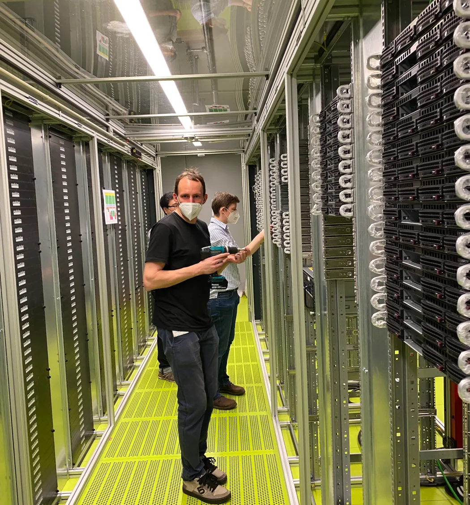
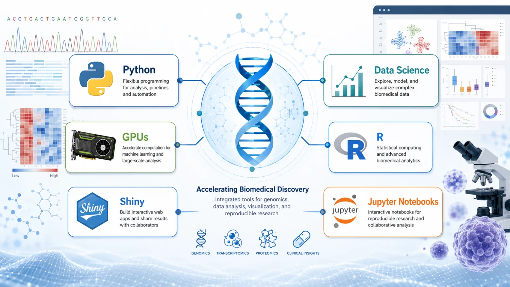

Data analysis
Move from research data to a reproducible result
Learn Python, R, notebooks, statistics, AI and machine learning, efficient I/O, GPUs, validation, and governed result sharing.
Follow the data analysis path →Overview · RCC ClusterDocs

Welcome to the staged RCC learning site for medical professionals, biomedical researchers, research software developers, and technical project staff. If you are new to RCC or preparing a new computer, start with RCC Expedition, the self-contained onboarding course for Windows 11 and macOS, then return here for current cluster guidance.
The course is designed so that a new user can progress without needing an administrator beside them. Each class has a small practical exercise and a gate that checks readiness without exposing credentials or generating significant cluster load.
Think of RCC as a set of project workrooms rather than one large shared disk. For definitions used throughout the documentation, see the RCC terminology reference.
Your primary group records where you belong; it is not how cross-department research data is shared. The project is the access and collaboration boundary. Start with the complete plain-language TL;DR for the important limits and links.
RCC supports statistics, visualization, Python and R data science, machine learning, GPU-accelerated AI, and distributed data processing. These techniques remain part of a reproducible research workflow: computation runs through Slurm, data stays within its project governance, and model evaluation includes validation, uncertainty, bias, and scientific limitations.
Data analysis
Learn Python, R, notebooks, statistics, AI and machine learning, efficient I/O, GPUs, validation, and governed result sharing.
Follow the data analysis path →Software development
Learn Git, Snakemake, Slurm, Conda, Apptainer, Python and R applications, Shiny, APIs, and governed deployment.
Follow the software development path →